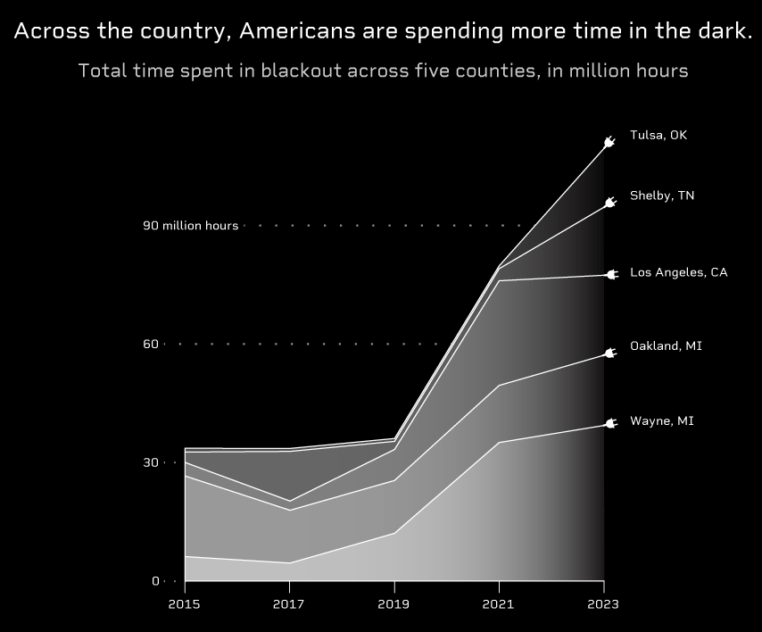

The United States is wholly dependent on electricity to function, yet the country's electrical grid is anything but dependable. Power outages

CNC routers are controlled by a computer. Coordinates are uploaded into the machine controller from a separate program. CNC router are often used with two software applications—one to make designs (CAD) and another to translate those designs into a G-code or M-code program of instructions for the machine (CAM) in vertical, horizontal and perpendicular coordinates. As with CNC milling machines, CNC routers can be controlled directly by manual programming, but CAD/CAM allows wider possibilities for contouring, speeding up the programming process and in some cases creating programs whose manual programming would be impractical. On some controllers the G-code can be loaded as a vector file on the router control panel. A vector file can be created from a picture file by using a drawing (CAD) software.
Here's a link